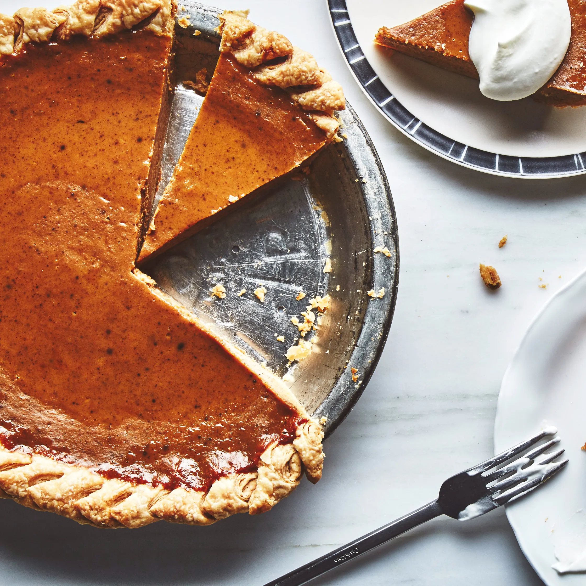

Welcome to Fall
The Best Pumpkin Pie
The best pumpkin pie recipe need to do three things to succeed. They should have a perfectly
spiced creamy filling. A crust that’s flaky yet tender. And, perhaps most important, they should seriously tempt
anyone who’s choosing from a vast and competitive Thanksgiving dessert spread. This recipe does the trick, the
sweetened condensed milk adds a decadent richness to the custard, while the perfect ratio of spices highlights
the flavors of the pumpkin.

Makes one 9" pie
Ingredients
- 1 tbps sugar
- 1½ tsp kosher salt
- 2 cups all-purpose flour, plus more for surface
- 5 tbsp chilled unsalted butter, cut into pieces
- 3 tbsp chilled lard or vegetable shortening
- 1 tbsp apple cider vinegar
- 1 large eggs, beaten to blend
- 5½ tbsp ice water
- ⅓ cup sugar
- 1 tsp ground cinnamon
- ¾ tsp kosher salt
- ½ tsp ground ginger
- ¼ tsp ground cloves
- 2 large eggs plus 1 large egg yolk, room temperature, beaten to blend
- 2 cups unsweetened pumpkin purée
- ⅔ cup sweetened condensed milk
- ⅓ cup heavy cream
- 2 tbsp maple syrup
- 2 tsp vanialla extract
- whipped cream (for serving)
Preparation
- Pulse sugar, salt, and 2 cups flour in a food processor until combined.
Addbutter and lard and
pulse until mixture resembles coarse meal with a few pieces of butter and lard visible, about 15
one-second pulses. With motor running, drizzle in apple cider vinegar and 5½ tbsp ice
water and pulse until
dough is still crumbly but just holds together when squeezed (add 1 tsp. water at a time if
necessary, but be careful not to overwork dough).
- Turn out dough onto a work surface. Knead 1–2 times, pressing to incorporate any shaggy pieces.
Flatten into a 6"-wide disk. Wrap with plastic wrap and chill at least 1 hour.
- Preheat oven to 425°. Roll out dough on a lightly floured work surface to a 14" round. Transfer to a
9" pie dish. Pick up edges and allow dough to slump down into dish, letting excess dough hang over
dish. Trim, leaving about a 1" overhang. Fold overhang under; pinch and crimp. Chill 30 minutes.
- Preheat oven to 325°. Whisk sugar, cinnamon, salt, ginger, and cloves in a large bowl until
no clumps remain. Add eggs, pumpkin, condensed milk, cream, maple syrup, and vanilla and whisk until
smooth. Pour into cooled crust. Bake pie until edges are set and slightly puffed but center is
recessed and wobbles like Jell-O, 60–75 minutes (it will continue to set after baking). Transfer to
a wire rack and let cool at least 3 hours before slicing. Serve with whipped cream.